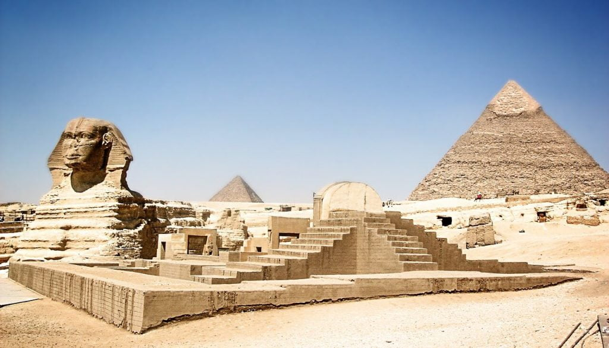

အီဂျစ်ပြည်က ဂီဇာ ပိရမစ် ကြီးတွေ တည်ဆောက်ခဲ့ စဉ်က ဘယ်လို တည်ဆောက်ခဲ့တယ် ဆိုတဲ့ မှတ်တမ်းမှတ်ရာတွေ ရှာဖွေ တွေ့ရှိရခြင်း မရှိပါဘူး။ ဒါ့ကြောင့် သိပ္ပံ ပညာရှင် တွေဟာ ဒီ ပိရမစ် ကြီးတွေ ဘယ်လို တည်ဆောက်ခဲ့တယ် ဆိုတာကို တွေ့ရှိရတဲ့ မြေပြင် အထောက်အထားတွေ ကနေ တဆင့် ဆက်စပ်ပြီး မှန်းဆ ကြရပါတယ်။
ဒီလို ဆက်စပ် ယူကြတဲ့ နေရာမှာ လွန်ခဲ့တဲ့ နှစ်ပေါင်း ၂၀ လောက် အတွင်းက အသစ် တွေ့ရှိရတဲ့ ရှေးဟောင်း သုတေသန တွေ့ရှိချက် တွေကြောင့် ဒီ ပီရမစ်တွေ တည်ဆောက်ခဲ့ ပုံနဲ့ ပါတ်သက်လို့ ပညာရှင်တွေ ပိုပြီး သိရှိ နားလည်လာ ခဲ့ကြပါတယ်။
ဂီဇာပိရမစ်ကြီးများ
ဂီဇာ ဒေသက ပထမ ဆုံး ပိရမစ် ကြီးကို ဘီစီ ၂၅၅၁ မှာ နန်းတက်တဲ့ ကူဖူ ဘုရင်ကြီး လက်ိထက်မှာ တည်ဆောက်ခဲ့တာ ဖြစ်ပါတယ်။ ဒီ ပိရမစ် ကြီးဟာ သက်တမ်းအားဖြင့် အစောဆုံး ဖြစ်သလို အရွယ်အစား အားဖြင့်လဲ အကြီးဆုံး ဖြစ်ပါတယ်။အခုလက်ရှိ အမြင့်ပေ ၄၅၅ ပေ မြင့်တဲ့ ဒီ ပိရမစ် ကြီးကို မဟာ ပိရမစ်ကြီး (Great Pyramid) လို့ ခေါ်ကြပါတယ်။ ဒီ ပိရမစ်ကြီးဟာ ရှေးခေတ်ကာလ ထဲက ကမ္ဘာအံ့ဖွယ် ၇ သွယ် ထဲမှာ အပါအဝင် ဖြစ်ခဲ့ပါတယ်။
ဒီ မဟာ ပိရမစ် ကြီးနားမှာ ကပ်ပြီး တည်ဆောက်ထားတဲ့ နောက်ပိရမစ် တစ်ခုကတော့ ကဖရာ ဘုရင်ကြီးရဲ့ ပိရမစ်ကြီးပဲ ဖြစ်ပါတယ်။ ဒီ ပိရမစ် ကြီးဟာ မဟာ ပိရမစ် ကြီးထက် အရွယ်အစား နည်းနည်းလေးပဲ ပိုသေးတာပါ။ ဒီ ပိရမစ်ကို ဘီစီ ၂၅၂၀ မှာ နန်းတက်တဲ့ ကဖရာ ဘုရင်ကြီးက တည်ဆောက်ခဲ့တာ ဖြစ်ပါတယ်။
ဒီ ပိရမစ်ဟာ မဟာ ပိရမစ် ကြီးထက် အရွယ် အနည်းငယ် ပိုငယ်ပေမယ့် သူ့ကို တည်ဆောက် ထားတဲ့ မြေပြင်ကတော့ ကုန်းမြင့်လေး ဖြစ်နေပါတယ်။
ဒီ ပီရမစ် ကြီး အနီးက စဖင့် ရုပ်တု ကြီးကိုလဲ အခု ပိရမစ်ကို တည်ဆောက်ခဲ့တဲ့ ကဖရာ ဘုရင်ကပဲ တည်ဆောက်ခဲံတယ်လို့ အချို့က ယုံကြည် ကြပါတယ်။ သူတို့က ဒီ စဖင့်ရုပ် ကြီးရဲ့ မျက်နှာဟာ ကဖရာ ဘုရင် ကြီးရဲ့ မျက်နှာ ဖြစ်တယ်လို့ ယုံကြည်ပါတယ်။.
တတိယမြောက် ပိရမစ် ကြီးကိုတော့ ဘီစီ ၂၄၉၀ မှာ နန်းတက်ခဲ့တဲ့ မန်ကောရာ ဘုရင်ကြီးက တည်ဆောက်ခဲ့တာ ဖြစ်ပါတယ်။ ဒီ ပိရမစ်က ဂီဆာ ပိရမစ် ၃ ခုထဲမှာ အရွယ်အစား အားဖြင့် အငယ်ဆုံး ဖြစ်ပါတယ်။ သူ့အမြင့်က ၂၁၅ ပေပဲ ရှိပါတယ်။
လွန်ခဲ့တဲ့ နှစ် ၂၀ အတွင်းမှာ သိပ္ပံ ပညာရှင် တွေဟာ ပိရမစ် တွေနဲ့ ပါတ်သက်တဲ့ တွေ့ရှိချက် အတော်များများကို ရှာဖွေ တွေ့ရှိ ခဲ့ကြပါတယ်။ ဒီ တွေ့ရှိချက် တွေကို ဆက်စပ်ပြီး ဒီ ပိရမစ် ကြီးတွေကို ဘယ်လို တည်ဆောက်ခဲ့ ကြသလဲ ဆိုတာကို အတော်လေး ပြည်ပြည့်စုံစုံ သိရှိလာကြပြီး ဖြစ်ပါတယ်။

ပိရမစ်တည်ဆောက်ရေးနည်းပညာဖွံဖြိုးလာပုံ
အီဂျစ် ပိရမစ် ကြီးတွေ တည်ဆောက်တဲ့ အင်ဂျင်နီယာ နည်းပညာ တွေဟာ နေ့ချင်းညချင်း ဖြစ်လာတာတော့ မဟုတ်ပါဘူး။ ရာစုနှစ်ပေါင်း များစွာ စုဆောင်းလာ ခဲ့တဲ့ နည်းပညာတွေကို အခြေခံပြီး တည်ဆောက်ခဲ့ ကြတာ ဖြစ်ပါတယ်။ ဒီ ကာလ အတွင်းမှာ အခက်အခဲ များစွာ ကိုလဲ ရင်ဆိုင် ကျော်လွှားခဲ့ ကြရတာပါ။ပိရမစ် တွေရဲ့ မူရင်း အစကတော့ လွန်ခဲ့တဲ့ နှစ်ပေါင်း ၅,၀၀၀ ကျော် လောက်က အီဂျစ်မှာ တည်ဆောက်ခဲ့ ကြတဲ့ လေးထောင့်စပ်စပ် ဂူသင်္ချိုင်း တွေပဲ ဖြစ်ပါတယ်။
ဘီစီ ၂၆၃၀ မှာ နန်းတက်တဲ့ ဖာရို ဂျိုဆာ (pharaoh Djoser) လက်ထက်မှာတော့ ဒီ့ထက် အဆင့်မြင့်တဲ့ သင်္ချိုင်းဂူ စတင် တည်ဆောက် ခဲ့ပါတယ်။
ဂျိုဆာ ဘုရင်ရဲ့ သင်္ချိုင်းဟာ သူ့အရင် ဘုရင်တွေလို လေးထောင့်စပ်စပ် မဟုတ်တော့ပဲ အထပ် ၆ ထပ်နဲ့ လှေကားထစ် ပုံစံ မြင့်တက်သွားတာကို တွေ့ရှိ ရပါတယ်။ နောက်ပြီး သူ့ ဂူသင်္ချိုင်း အောက်ထဲမှာ မြေအောက် လှိုင်ခေါင်းတွေနဲ့ မြေအောက်ခန်း တွေလဲ ဖွဲ့စည်း တည်ဆောက် ထားတာကို ရှာဖွေ တွေ့ရှိခဲ့ ကြပါတယ်။
ဘီစီ ၂၅၇၅ မှာ နန်းတက်တဲ့ ဖာရို စနက်ဖရူ (pharaoh Snefru) လက်ထက်မှာ အနည်းဆုံး ပိရမစ် ၃ ခု တည်ဆောက်ခဲ့တယ်လို့ ဆိုပါတယ်။ သူ့လက်ထက် တည်ဆောက်တဲ့ ပိရမစ် တွေဟာ အရင် ပိရမစ် တွေလို လှေကားထစ် ပုံစံ မဟုတ်တော့ပဲ ချောမွေ့တဲ့ မျက်နှာပြင်နဲ့ ပိရမစ်တွေ စတင် တည်ဆောက် နိုင်ခဲ့ပါတယ်။
ဒါပေမယ့် ဒီ ပိရမစ် တွေကို တည်ဆောက်ခဲ့တဲ့ အင်ဂျင်နီယာတွေဟာ ပိရမစ် တည်ဆောက်နည်းပညာတွေကို သိပ်တော့ ကျွမ်းကျင်လှ သေးဟန် မတူပါဘူး။ သူ့လက်ထက် တည်ဆောက်ခဲ့တဲ့ ပိရမစ် ၃ လုံးအနက်က တစ်လုံးဟာ ညီညီညာညာ မဖြစ်ပဲ ရွဲ့စောင်းစောင်း ဖြစ်နေပါတယ်။
ပညာရှင် တွေကတော့ မူလ ဒီဇိုင်း ဆွဲသူတွေ ဆွဲတဲ့ ပုံကို လက်တွေ့ အကောင်အထည် ဖေါ်ရာမှာ အခက်အခဲတွေ ဖြစ်ပေါ်လာတာကြောင့် ဆောက်လက်စ တန်းလန်းမှာ ပုံစံ ပြောင်းလိုက် ရတာကြောင့် ရွဲ့စောင်းစောင်း ဖြစ်သွားတယ်လို့ ယူဆကြ ပါတယ်။
ပိရမစ် ဆောက်တဲ့ အင်ဂျင်နီယာ တွေဟာ ဒီပြဿနာကို ဖြေရှင်းနိုင် ခဲ့ကြဟန် တူပါတယ်။ ဒီ ပိရမစ် နောက်မှာ ထပ်ဆောက်တဲ့ ပိရမစ် ကတော့ အခုလို ရွဲ့စောင်းစောင်း ဖြစ်မနေပဲ ဖြောင့်တန်း ညီညာ နေတာကို တွေ့ကြရပါတယ်။
ဖာရို စနက်ဖရူ ရဲ့ သား ကူဖူ လက်ထက် မှာတော့ ပိရမစ် တည်ဆောက်နည်း ပညာတွေ တိုးတက်လာပြီး မဟာ ပိရမစ် ကြီးကို တည်ဆောက်နိုင်ခဲ့ ပါတယ်။
ဆက်စပ်ဆောင်းပါး – ဂီဇာဒေသမှ စဖင့်ရုပ်ကြီး
တည်ဆောက်ရန်ပြင်ဆင်ခြင်း
ပိရမစ် တည်ဆောက်ရေးကို ကြီးကြပ်ဖို့ အစိုးရ အဆင့်မြင့် အရာရှိကြီး တစ်ယောက်ကို တာဝန်ပေးလေ့ ရှိပါတယ်။ ၂၀၁၀ ခုနှစ်မှာ တွေ့ရှိခဲ့တဲ့ papyrus အမိန့်တော် မှတ်တမ်းစာ အရ ကူဖူ ဘုရင်ရဲ့ ဖအေတူ မအေကွဲ ညီ ဖြစ်သူ အန်ကာဖ် (Ankhaf) ဟာ ဘုရင့် နန်းသက် ၂၇ နှစ် ပြည့်ချိန်မှာ ဘုရင့် နန်းရင်းဝန် အဖြစ်တင် မက ပိရမစ် တည်ဆောက်ရေး စီမံကိန်းကိုပါ ကြီးကြပ်သူ အဖြစ် တာဝန်ထမ်းဆောင် ခဲ့တယ်လို့ သိရပါတယ်။ပိရမစ် တစ်ခု တည်ဆောက်ဖို့ ပြင်ဆင်ရတာ မလွယ်ပါဘူး။ မြေညှိတာက စပြီး အလုပ်သမား တန်းလျားတွေ၊ ဘုရားကျောင်းတွေ၊ သင်္ဘောဆိပ်တွေ တည်ဆောက်ရပါတယ်။ အလုပ်သမားတွေ သေရင် မြှုပ်နှံဖို့ သင်္ချိုင်းတွေလဲ တည်ဆောက်ရ ပါသေးတယ်။
ဒီ အဆောက်အဦတွေ တည်ဆောက်ရာမှာ အီဂျစ် အင်ဂျင်နီယာ တွေဟာ တောင်မြောက်ကို တန်းနေအောင် တိတိကျကျ တည်ဆောက်နိုင် တာကို အံ့ဩဖွယ်ရာ တွေ့ရှိခဲ့ ကြပါတယ်။
ဒီနေရာမှာ သံလိုက်အိမ်မြှောင်က ပြတဲ့ မြောက်ဖက် မဟုတ်ပဲ တကယ် ကမ္ဘာလည်နေတဲ့ ဝင်ရိုး ညွှန်တဲ့ အမှန်အကန် မြောက်အရပ် (True North) ကို အီဂျစ် အင်ဂျင်နီယာတွေ အတိအကျ တိုင်းတာနိုင်ကြတာ ဖြစ်ပါတယ်။
ဥပမာ ကူဖူ ရဲ့ မဟာ မိရမစ် ကြီးဟာ တကယ့် အမှန်အကန် မြောက်အရပ်ကို တိတိကျကျ နီးပါး တန်းနေတယ်လို့ ဆိုပါတယ်။ ဘယ်လောက်ထိ တိကျလဲ ဆိုရင် အမှန်အကန် မြောက်အရပ် ကနေ တစ် ဒီဂရီ ရဲ့ ၁၀ ပုံ ၁ ပုံပဲ လွဲတယ်လို့ ဆိုပါတယ်။
အခုထိ ပညာရှင် တွေဟာ ရှေးအီဂျစ်တွေ ဘယ်လိုနည်းလမ်း ကို အသုံးပြုပြီး True North အစစ်အမှန် မြောက်အရပ်ကို ရှာဖွေခဲ့လဲ ဆိုတာ ပညာရှင်တွေ အဖြေ မဖော်နိုင်ကြ သေးပါဘူး။
ဆက်စပ် ဆောင်းပါး – ဂီဇာပိရမစ် ကြီးရဲ့ တည်နေရာဟာ အလင်းအလျှင်နှုန်းနဲ့ ဆက်စပ်နေတယ်ဆိုတာ တကယ်လား
ကုန်ကြမ်းနှင့်စားနပ်ရိက္ခာများ
ပိရမစ် အပြင်နံရံကို အချောသတ်ဖို့ လိုအပ်တဲ့ ထုံးကျောက်တုံး (lime stone) တွေဟာ ဂီဇာ ဒေသမှာ မထွက်ရှိပါဘူး။ ဒီ ထုံးကျောက်တုံး တွေကို ထုံးကျောက်တွင်း တွေကနေ ထုတ်ယူ ပြီး ဂီဇာ ဒေသ ရောက်အောင် သယ်ဆောင် ကြရပါတယ်။၂၀၁၀ ခုနှစ်က ဝါဒီ အယ်လ်ဂျာဖ် (Wadi al-Jarf) သဲချောင်းပတ်ဝန်းကျင်မှာ (Wadi ဆိုတာက သဲချောင်းလို ချောင်းခြောက် ကို ခေါ်တာပါ) ရှာဖွေ တွေ့ရှိ ခဲ့တဲ့ ကျူရွက် ပရပုဒ် မှတ်တမ်း အရ ထုံးကျောက်တွင်း တွေကနေ ထုတ်ယူရရှိတဲ့ ကျောက်တွေကို ထုတ်ယူပြီး ရက်အနည်းငယ် အတွင်း လှေတွေနဲ့ တင်ပြီး ဂီဇာ ဆိပ်ကမ်းတွေကို သယ်ဆောင်လာတယ်လို့ မှတ်တမ်းတင် ထားပါတယ်။
ဖာရို မန်ကောရာ ရဲ့ ပိရမစ်ကြီး အနားမှာ တည်ထားတဲ့ မြို့သစ် တစ်မြို့ကို တူးဖေါ် ရရှိ ခဲ့ပါတယ်။ ဒီ မြို့မှာ ထူးခြားတာက အီဂျစ် အဆင့်မြင့် အရာရှိ တွေရဲ့အိမ်တွေ အများအပြား တူးဖော် တွေ့ရှိ ရတာပဲ ဖြစ်ပါတယ်။
နောက်ပြီး စစ်သားတွေ အတွက် ခံတပ်ငယ် တစ်ခုကိုလဲ တွေ့ကြရ ပါတယ်။ ဒီ ခံတပ်ရဲ့ အနီးမှာပဲ မှတ်တမ်း မှတ်ရာတွေ သိမ်းဆည်းတဲ့ မှတ်တမ်းဌာန အဆောက်အဦ တွေကိုလဲ တူးဖေါ် တွေ့ရှိ ကြရပါတယ်။
အလုပ်သမား တွေကတော့ ပိရမစ်ကြီး နားက ရိုးရိုး ရွှံ့အိမ်တွေမှာ နေထိုင်ကြပါတယ် (ရွှံ့ကို မီးဖုတ်ပြီး ပြုလုပ်ထားတဲ့ အုတ်နဲ့ ဆောက်တဲ့ အိမ်တွေပါ။)
ရှေးဟောင်း သုတေသီ တွေရဲ့ ခန့်မှန်းချက် အရ ဒီ ပိရမစ်တွေ တည်ဆောက်ဖို့ အလုပ်သမား အင်အား ၁၀,၀၀၀ ခန့် အသုံးပြု ခဲ့ရတယ်လို့ ဆိုပါတယ်။ ၂၀၁၃ ခုနှစ်က တင်ပြတဲ့ သုတေသန စာတမ်း အရဆို ဒီ အလုပ်သမား တွေကို အဟာရ ပြည့်ဝအောင် ဂရုတစိုက် ကျွေးမွေး ထားခဲ့တယ် ဆိုတဲ့ အထောက်အထားတွေ တွေ့ရှိခဲ့ ပါတယ်။
သုတေသန အထောက် အထား တွေအရ နေ့စဉ် အသား ပေါင် ၄,၀၀၀ ရရှိအောင် သိုး၊ ဆိတ် နဲ့ နွားတွေ ပေါ်တဲ့ သားသတ်ရုံ နေရာတွေ အနီးအနားမှာ တွေ့ရှိ ထားပါတယ်။ ဒီ ပမာဏဟာ အလုပ် သမား ၁၀,၀၀၀ ကို နေ့စဉ် အဟာရ လုံလောက်အောင် ကျွေးနိုင်ဖို့ လုံလောက်တဲ့ ပမာဏ ဖြစ်တယ်လို့ ဆိုပါတယ်။
ဒီ အလုပ်သမားတွေ ကျွေးမွေးဖို့ တိရိစ္ဆာန် တွေကိုတော့ နိုင်းမြစ်ဝ ကျွန်းပေါ် ဒေသမှာ မွေးမြူပြီး ဒီ ဆောက်လုပ်ရေး လုပ်ငန်းခွင်ကို ပို့ဆောင် ပေးတယ်လို့ ဆိုပါတယ်။
ဒီလို အသား လုံလုံလောက်လောက် ကျွေးနိုင်တာဟာ ဒီ ဆောက်လုပ်ရေး လုပ်ငန်းခွင် အတွက် အလုပ်သမားတွေကို ဆွဲဆောင်နိုင်မယ့် နည်းလမ်း တစ်ခု ဖြစ်တယ်လို့ သုတေသီ တွေက ယူဆကြ ပါတယ်။
သုတေသီ တွေရဲ့ အယူအဆ အရ အဲ့သည် အချိန်က ကျေးရွာတွေက ရွာသူရွာသားတွေ စားရတဲ့ အစားအသောက်ထက် ဆောက်လုပ်ရေး လုပ်ငန်းခွင်က အလုပ်သမားတွေ စားရတဲ့ အစားအသောက်က ပိုမို ကောင်းမွန်ပြီး အဟာရ ပြည့်ဝတယ်လို့ ဆိုပါတယ်။
ဆက်စပ်ဆောင်းပါး – အီဂျစ်မံမီ ၃ ခု၏ မျက်နှာအား DNA မှတဆင့် ပြန်ပုံဖေါ်
ကျောက်တူးဖော်ခြင်း
ဂီဇာ ပိရမစ် ကြီးတွေ တည်ဆောက်ရာမှာ အများဆုံး အသုံးပြုတဲ့ ကျောက်တွေကို ပိရမစ်တွေ တည်ဆောက်ရာ ဒေသရဲ့ တောင်ဖက်ပိုင်း မလှမ်းမကမ်းက ကျောက်တွင်းတွေ ကနေ တူးဖော် ထုတ်ယူ ကြပါတယ်။ ဒီကျောက်တုံး တွေကို ပိရမစ်ကြီးဆီ ရောက်အောင် ကုန်းလမ်းကနေ ပဲ တွန်းရွှေ့ ခဲ့ကြမယ်လို့ ယူဆကြ ပါတယ်။ပိရမစ် ကြီးရဲ့ အပေါ်က အုပ်ထားတဲ့ အဖြူရောင် ထုံးကျောက်တွေ ကိုတော့ ယနေ့ခေတ် ကိုင်ရို မြို့နားက ကျောက်တွင်းကနေ ထုတ်ယူပြီး လှေနဲ့ သယ်ဆောင် ကြပါတယ်။ ဒီ ပိရမစ်ကို အုပ်ထားတဲ့ ထုံးကျောက်တုံးတွေဟာ ကွာကျကုန် တာမို့ ယခုအခါ ပိရမစ်ကြီး တွေရဲ့ ထိပ်ပိုင်း နားလေးလောက် မှာပဲတွေ့ ကြရပါတော့တယ်။
ကျောက်တုံးများအားသယ်ဆောင်ခြင်း
ကျောက်တုံး ကြီးတွေကို ကုန်းပေါ်မှာ သယ်ဖို့ အတွက် အီဂျစ်တွေဟာ စွတ်ဖားကြီး တွေကို အသုံး ပြုကြပါတယ်။ ကျောက်တုံးတွေကို ဒီ စွတ်ဖားကြီး တွေပေါ် တင်ပြီး လူအားနဲ့ ဆွဲကြပါတယ်။ ရွှေ့ရ လွယ်အောင် အောက်ခံ သဲကို ရေဖြပေး လိမ့်မယ်လို့ ယူဆရပါတယ်။သဲကန္တာရ ထဲက သဲကို ရေဖြန်းပြီး စိုစွတ်အောင် ပြုလုပ်ပေးခြင်းဖြင့် ဆွဲဖို့ လိုတဲ့ လူအင်အားကို တစ်ဝက်လောက် အထိ လျှော့ချနိုင်မယ်လို့ ဆိုပါတယ်။
ကျောက်တုံးကြီးတွေ ပိရမစ် ဆောက်မယ့်နေရာ ရောက်တဲ့ အခါမှာ အပေါ်ကို ရောက်အောင် ကုန်းလျော ပြုလုပ်ပြီး တွန်းတင်ကြမယ်လို့ ယူဆပါတယ်။
ဒါပေမယ့် ဒီ ကုန်းလျောကို ဘယ်လိုပုံ တည်ဆောက်သလဲ၊ ဘယ်ပုံစံ ရှိလဲ ဆိုတာကိုတော့ ဘယ်သူမှ သေသေချာချာ မသိကြပါဘူး။ အခုထိ တော့ ဒီလို ကုန်းလျောမျိုး ထင်ထင်ရှားရှား ရှာမတွေ့ သေးပါဘူး။
ပိရမစ်တွေ ဘယ်လို တည်ဆောက်လဲ ဆိုတာ ပိုပြီး သိရအောင် တက္ကသိုလ် ၃ ခု ပူးပေါင်းပြီး Scan Pyramids Mission စီမံကိန်းနဲ့ လေ့လာနေ ပါတယ်။ ခေတ်မီ နည်းပညာတွေ အသုံးပြုပြီး ဂီဇာ ပိရမစ် ကြီးတွေကို စကင် ပြန်ဖတ်ပြီး တည်ဆောက်ပုံကို လေ့လာဖို့ ကြိုးစား နေတာ ဖြစ်ပါတယ်။
ဒီ စီမံကိန်းကနေ ပိရမစ် ကြီးတွေ ဘယ်လို တည်ဆောက်ခဲ့ သလဲ ဆိုတာနဲ့ ပါတ်သက်လို့ ပိုသိအောင် ရှာဖွေ ဖို့ အပြင် ပိရမစ် ကြီးတွေထဲမှာ ရှာမတွေ့ သေးတဲ့ လှို့ဝှက် အခန်းတွေ ရှိမရှိ ကိုလဲ ရှာဖွေ မယ်လို့ သိရပါတယ်။
Reference: How were the Egyptian pyramids built? | Live Science